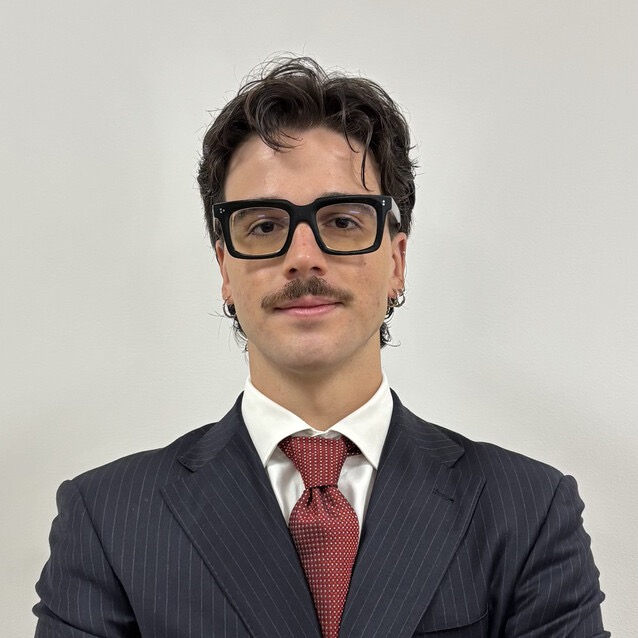

Politecnico di Bari · RWTH Aachen
About

An aeronautical (MSc) and mechanical (BSc) engineer, oriented to R&D and design.
I am an aeronautical-mechanical engineer: BSc and MSc at Politecnico di Bari, with an Erasmus exchange at RWTH Aachen focused on non-linear finite element methods, fatigue of structures and model-based product development. My two theses cover both ends of the product loop: design and testing of lightweight UAV systems with Leonardo S.p.A. (MSc), and NVH analysis of electric-vehicle bearings with SKF (BSc). In between, I led an early-stage AI project for automated wing and control-surface generation.
A CV can only assert; this site lets you verify. Every project page carries the actual evidence behind the corresponding CV line — the drawings, the code, the test reports, the CAD.
I have lived and studied across Germany, Montenegro and Israel, and I am immediately available for international travel and relocation. The full timeline and formal details are in my CV.
Currently Learning
- Advanced Python — Through MIT's course< building on the scripting toward data-processing and automation work.
- German — Currently attending a structured course.
- French — Currently attending a structured course.
Toolkit
Links & CV
Download CV
Full timeline: education, thesis work, projects and tools.
LinkedInProfessional profile
Career history, updates and professional network.
GitHubCode & repositories
Source code and technical files behind the projects.